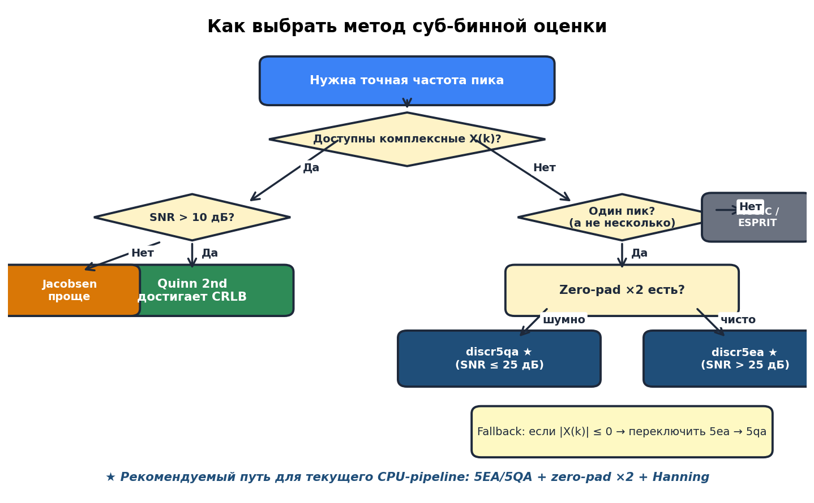
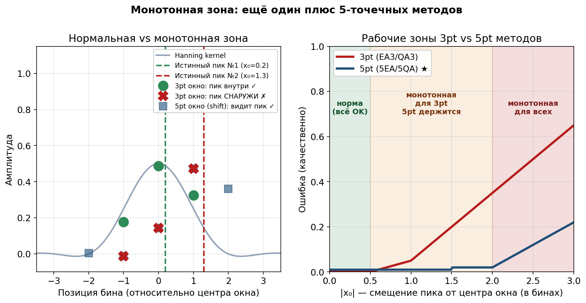
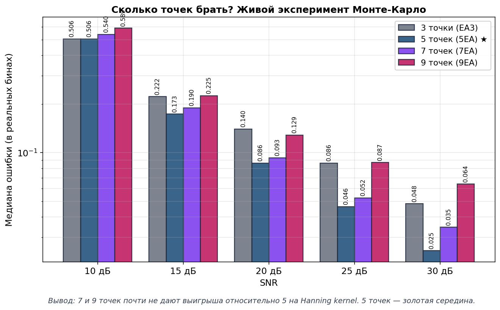
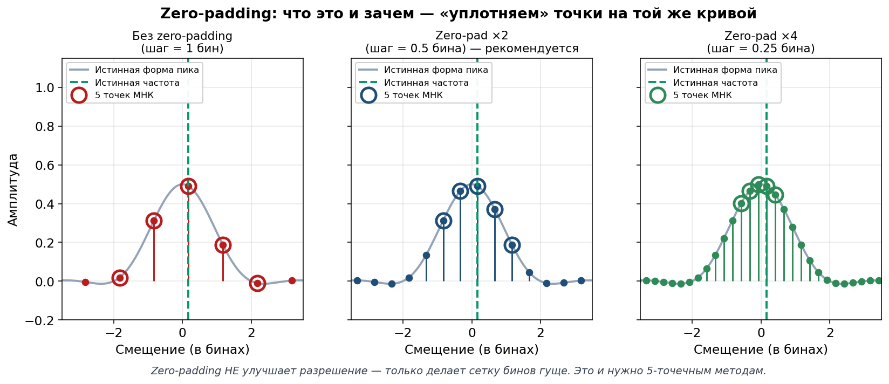

Рекомендации¶
Итоговые рекомендации — как найти частоту в зашумлённом сигнале
Эта страница — концентрат всех выводов проекта 2026 года. Источник —
подробный отчёт Doc/Frequency_Recommendations_2026-04-06.md.
- Дата:
2026-04-06
- Автор:
Кодо (AI) + Alex
- Статус:
финальные рекомендации по итогам Монте-Карло
Главная рекомендация — за 60 секунд¶
Совет
Всегда используй discr5ea (МНК-Гауссиан по 5 точкам).
Fallback: если какая-то \(|X(k)| \leq 0\) → переключись на
discr5qa.
Обязательные требования:
Окно Hanning перед FFT
Zero-padding минимум ×2
5 точек вокруг максимума \((k-2,\ldots, k+2)\)
{kind=link}

Рис. 15 Дерево решений: какой метод выбрать в зависимости от условий.¶
Почему не нужен «гибри件
Раньше думали: «при шуме один метод, при чистоте другой». На Hanning kernel гибрид не нужен:
5EA и 5QA дают практически одинаковый результат (разница ~5%);
Оба стабильно лучше любого 3-точечного метода;
5EA чуть точнее на чистых данных, 5QA чуть точнее при сильном шуме — но разница исчезающая.
Один вызов. Никаких if-else по уровню шума.
Главный эксперимент — кто победил¶

Рис. 16 Монте-Карло: 5pt vs 3pt по медиане ошибки при разных SNR.¶
Эксперимент: для каждого уровня SNR — 5000 × 21 = 105 000 испытаний, случайный шум, случайное положение пика, окно Hanning, zp×2.
Что видно на графике¶
Серая пунктирная — EA3 (классика, 3 точки)
Оранжевая — 5QA (МНК-парабола, 5 точек)
Синяя жирная ★ — 5EA (МНК-Гауссиан, 5 точек)
Главное наблюдение: обе 5-точечные кривые лежат ниже 3-точечной EA3 при любом SNR. 5-точечные всегда лучше.
Выигрыш в цифрах¶
SNR (дБ) |
Выигрыш 5pt относительно EA3 |
|---|---|
40 (идеал) |
\(\times 1.4\) |
30 (отлично) |
\(\times 1.8\) |
25 (хорошо) |
\(\times 2.0\) |
20 (норма) |
\(\times 2.0\) |
15 (шумно) |
\(\times 1.7\) |
10 (плохо) |
\(\times 1.2\) |
5 (ужас) |
\(\times 1.2\) |
5-точечные методы стабильно выигрывают в 1.2–2.0 раза.
Что это значит в реальных герцах¶

Рис. 17 Точность оценки в реальных герцах при типичных параметрах радара (\(f_s = 100\) МГц, \(N = 4\) млн).¶
При типичных условиях¶
Параметры: \(f_s = 100\) МГц, \(N = 4M\), \(\Delta f \approx 23.84\) Гц, SNR = 20 дБ.
Метод |
Ошибка |
|---|---|
Без интерполяции (просто |
~12 Гц |
EA3 (классика, 3 точки) |
~1.2 Гц |
5EA / 5QA ★ (наш выбор) |
~0.6 Гц |
Quinn 2nd (будущее, комплексные \(X(k)\)) |
~2.4 мГц |
Улучшение в 20 раз
Переход «argmax → 5EA» = улучшение в 20 раз без единого нового датчика — только за счёт правильной математики.
Точность vs SNR¶
SNR (дБ) |
Ошибка 5EA/5QA |
|---|---|
30 |
≈ 0.21 Гц |
20 |
≈ 0.61 Гц |
10 |
≈ 1.73 Гц |
Даже в очень шумных условиях (SNR = 10 дБ) мы в 7 раз точнее, чем без интерполяции.
Бонус: монотонная зона¶
{kind=link}

Рис. 18 Монотонная зона: 5pt-методы держат пик в 4 раза более широкой зоне.¶
Что это¶
«Монотонная зона» — ситуация, когда истинный пик вышел за пределы окна, и в окне измерений амплитуды только растут или только убывают.
Метод |
Граница монотонной зоны |
|---|---|
3pt (QA, EA) |
\(|x_0| > 0.5\) бина |
5pt (5QA, 5EA) |
\(|x_0| > 2.0\) бина |
5pt прощает промах до 2 бинов — оно «дотягивает» правильное значение. То есть 5pt робастнее к небольшим сдвигам пика.
Почему именно 5 точек, а не 7 или 9¶
{kind=link}

Рис. 19 Сравнение МНК 3/5/7/9 точек на Hanning kernel.¶
Результат Монте-Карло: 7 и 9 точек почти не дают выигрыша на Hanning kernel. А при высоком SNR (≥ 25 дБ) 7 и 9 даже хуже, чем 5.
Hanning-пик — это колокол шириной ±2 бина. Крайние точки 7pt/9pt окон (±3, ±4 бина) попадают в хвосты, где:
форма уже не параболическая (большой bias);
амплитуды маленькие (плохое SNR).
Совет
Для Hanning kernel 5 точек = оптимум. Больше не нужно.
Парабола + Hanning = любовь¶

Рис. 20 Слева — sinc vs Hanning. Справа — парабола идеально
ложится на Hanning kernel.¶
Левый график — форма пика¶
Красная (sinc) — форма пика без окна. Острый, с «ушами» (боковыми лепестками −13 дБ).
Синяя (Hanning kernel) — форма пика с окном Hanning. Гладкий, колоколообразный, без уродливых «ушей».
Правый график — парабола на Hanning¶
5 точек на Hanning-пике + парабола \(y = ax^2 + bx + c\) → ошибка меньше 2.5% в пределах \(\pm 0.7\) бина от вершины.
Гора в тумане
У тебя 5 альтиметров, расставленных через равные промежутки. По их показаниям ты хочешь угадать, где самая высокая точка горы между приборами. Если форма горы — парабола (а Hanning kernel очень похож!), достаточно подогнать параболу к 5 точкам и взять её вершину. Это и есть наш метод.
Zero-padding ×2 — обязательное требование¶
{kind=link}

Рис. 21 Эффект zero-padding на сетку бинов.¶
Что это¶
Перед FFT дописываем нули к сигналу, чтобы общая длина стала в 2 раза больше. Сетка бинов FFT становится гуще, а форма Hanning kernel не меняется.
Вариант |
Шаг бинов |
Макс. ошибка |
|---|---|---|
Без zero-padding |
1.0 бин |
±0.5 бина |
Zero-pad ×2 ★ |
0.5 бина |
±0.25 бина |
Zero-pad ×4 |
0.25 бина |
±0.125 бина |
Зачем минимум ×2¶
При zp×2 все 5 точек 5EA/5QA попадают в главный лепесток Hanning, где парабола ложится идеально. При zp×1 крайние точки вылезают из главного лепестка → парабола больше не работает хорошо.
Экспериментальное подтверждение:
без zero-padding: ошибка 5QA = 11.9%
с zp×2: ошибка 5QA = 2.9%
Разница в 4 раза.
Важное уточнение
Zero-padding не улучшает разрешение — два очень близких пика от него не станут различимыми. Разрешение определяется длиной оригинальной записи.
Quick reference¶
C-код (текущий модуль)¶
#include "discr5ea.h"
#include "discr_common.h"
#include <complex.h>
#include <stdlib.h>
// ... после FFT и поиска k_max ...
double y[5], xs[5];
for (int i = 0; i < 5; ++i) {
y[i] = cabs(X[k_max - 2 + i]); // |X(k-2)| .. |X(k+2)|
xs[i] = (double)(i - 2); // {-2, -1, 0, 1, 2}
}
double delta; // суб-бинное смещение в единицах padded-шага
int ok = discr5ea(y, xs, &delta); // МНК-Гауссиан по 5 точкам
if (ok != EXIT_SUCCESS) {
// fallback: какая-то амплитуда ≤ 0 → 5QA по амплитудам
discr5qa(y, xs, &delta);
}
// Перевод в частоту
double f_hz = (k_max + delta) * fs / (double)N_padded;
Python-код (для тестов и прототипирования)¶
import numpy as np
from scipy.signal.windows import hann
def estimate_frequency(signal, fs, zero_pad=2, search_radius=1000):
M = len(signal)
N_base = 1 << (M - 1).bit_length() # до ближайшей степени 2
N = N_base * zero_pad
X = np.fft.fft(signal * hann(M), n=N)
X_mag = np.abs(X[:N // 2])
k_max = int(np.argmax(X_mag[:search_radius]))
if 2 <= k_max <= len(X_mag) - 3:
y = X_mag[k_max - 2 : k_max + 3]
if np.all(y > 0):
z = np.log(y) # 5EA
a = (2*z[0] - z[1] - 2*z[2] - z[3] + 2*z[4]) / 14.0
b = (-2*z[0] - z[1] + z[3] + 2*z[4]) / 10.0
else: # 5QA fallback
a = (2*y[0] - y[1] - 2*y[2] - y[3] + 2*y[4]) / 14.0
b = (-2*y[0] - y[1] + y[3] + 2*y[4]) / 10.0
delta = -b / (2*a) if abs(a) > 1e-30 else 0.0
else:
delta = 0.0
return (k_max + delta) * fs / N
Чек-лист перед релизом¶
Примечание
[ ] Сигнал умножен на окно Hanning до FFT
[ ] Используется zero-padding минимум ×2 (
N = next_pow2(M) * 2)[ ] Грубый максимум
k_maxищется в разумном диапазоне (не на краях FFT)[ ] Вокруг максимума есть минимум 2 точки слева и 2 справа
[ ] Для
discr5ea: проверка \(A_i > 0\) перед вызовом, иначе fallback наdiscr5qa[ ] Результат переводится в Гц через \((k_{\max} + \delta) \cdot f_s / N_{\text{padded}}\)
[ ] Покрытие тестами: см. Тесты
[ ] Проверена точность на эталонных данных (sinc, Hanning kernel, реальные FFT)
Что дальше — Quinn 2nd и комплексный pipeline¶
Наш текущий pipeline работает с магнитудой \(|X(k)|\) — мы выбрасываем фазу. Но фаза содержит половину информации о сигнале.
Quinn 2nd estimator — максимум точности¶
Если в будущем pipeline сможет передавать комплексные \(X(k)\) (а не только магнитуду), можно использовать Quinn 2nd estimator:
Свойство |
Значение |
|---|---|
Точность |
достигает Cramér-Rao bound |
Точек |
3 бина (как у EA3) |
Bias |
\(\pm 0.0001\) бина (в 50× точнее 5EA) |
Сложность |
~20 операций |
Это путь для модулей, где комплексные данные есть «из коробки».
IPI (Iterative Parabolic Interpolation, 2025)¶
Свежий итеративный метод. Достигает CRLB, но каждая итерация \(\mathcal{O}(N)\). Для 1.3M точек это дорого. Для CPU pipeline неактуально.
CZT / Zoom FFT¶
Альтернатива FFT: вычисляет спектр только в узкой полосе вокруг пика с любым разрешением. Если нужна экстремальная точность — вариант, но требует \(\mathcal{O}(N \log N)\) операций.
Самое главное, если коротко¶
Совет
Для задачи «найти частоту в зашумлённом сигнале» в текущем CPU-pipeline
используй discr5ea (МНК-Гауссиан по 5 точкам) с fallback на
discr5qa и обязательным zero-padding ×2.
Это даст точность ~0.6 Гц при SNR = 20 дБ — в 20 раз лучше, чем без интерполяции, и в 2 раза лучше, чем классическая 3-точечная EA3.
В будущем (когда появится доступ к комплексным \(X(k)\)) — перейти на Quinn 2nd для максимальной точности в ±2 мГц.
Связанные ресурсы¶
Обзор — общее введение
Формулы — полные математические формулы
Сравнение методов — сравнительный обзор методов
Визуальный разбор — визуальный разбор (GIF + 3D)
FFT-дискриминаторы частоты — применение к FFT-оценке частоты
C API Reference — справочник C API
Doc/Frequency_Recommendations_2026-04-06.md— полный отчётDoc/FFT_Frequency_Estimation.md— справочник FFT-методов